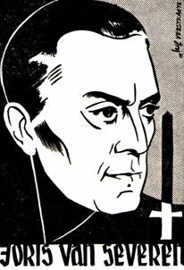

> nieuwsbrief > 2011 - nr 2
Inhoud
Hernieuwen
ledenbijdrage 2011
In ruil voor een ongewijzigde basisbijdrage
van 25 kunt u zich nog steeds verzekeren van een abonnement op
onze Nieuwsbrief Joris
van Severen en van
het reeds 15e Jaarboek Joris van
Severen zijn persoon, zijn
gedachten, zijn invloed, zijn werk. Verderop
in dit nummer leest u alvast méér over de rijke inhoud van het
nieuwe
jaarboek dat omstreeks midden mei verschijnt. Als steeds hopen we
er ook nu
weer op dat eenzelfde aantal leden spontaan deze basisbijdrage afronden
tot
het ronde bedrag van 30 .
Teksten
van
Joris van Severen en Louis Gueuning
Door onze vriend Thomas Wentzel uit het
verre Emmeloord
werden totnogtoe een aantal stilaan onvindbaar geworden historische
bronnen van
en over Joris van Severen en het Verdinaso ingescand als PDF-document.
Volgende
titels werden aldus weer toegankelijk gemaakt voor belangstellenden:
·
Joris
van Severen, Van de
demoliberale Volksverscheurdheid naar
Dietschland en Orde door het Verdinaso, 39 pp.
·
André
Belmans, Joris van Severen,
72 pp.
·
Louis
Gueuning, Joris
van Severen, Vader des Vaderlands, 74
pp.
·
Louis
Gueuning, Boodschap
over de Dinasozending, 20 pp.
·
Louis
Gueuning, Zending
van het volk der Nederlanden, 23
pp.
·
Ernst
Voorhoeve, Wat is en wat wil
het Verdinaso Nederland,
36 pp.
Rodolf
Siks
In het Jaarboek
Joris van
Severen 14 komt de
naam van deze frontarts voor onder
voetnoot
125 (op p. 125). Siks is de schrijfwijze als genoteerd door Joris van
Severen
in zijn dagboek van het jaar 1919.
Ons medelid de heer R. Versteele uit
Kraainem wist
evenwel te achterhalen dat de juiste schrijfwijze niet Siks, doch wel Six luidt. Rodolphe Gustave Six werd
geboren te Brugge op 2 november 1880 en sneuvelde te Langemark op 28
september
1918. Hij kreeg uiteindelijk zijn laatste rustplaats op de Militaire
Begraafplaats van Houthulst, graf V-867-1923-9/25.
Vroege
vogels
Omdat de periode rond 20 mei waarop sinds
jaar en
dag het Bloedbad van Abbeville ter plaatse herdacht wordt heden ten
dage
reeds in de blokperiode valt, verkozen de studenten van Kasper al
in maart
een bezoek te brengen het dubbelgraf van Joris van Severen en Jan
Rijckoort te
Abbeville. Ze kaderden dit bezoek binnen een Picardië-weekeinde,
waarbij ook
Amiens en zijn monumentale kathedraal bezocht werden. Aan het graf te
Abbeville
hield een van hen een korte toespraak die u in het volgende nummer van
de Nieuwsbrief Joris van Severen te lezen
krijgt.
Rond de datum van het overlijden van Louis
Gueuning
11 november bracht een afvaardiging van Kasper in het najaar van
2010 ook
een bezoek aan het graf van Louis Gueuning te Mainvault in Henegouwen.
De daar
uitgesproken rede brengen we verderop in dit nummer.

Zaterdag
21 mei 2011: jaarmis
te Brugge &
Zondag 22 mei 2011: groet aan het graf te Abbeville
Herdenking aan
het Bourgoensche
Cruyce
Zaterdag
21
mei: 11.00 uur: aan de
toegangspoort tot het Bourgoensche Cruyce, het voormalige woonhuis
van Joris van Severen in de Wollestraat te Brugge memoreert een
gedenkplaat de
namen van de vier Brugse slachtoffers van het Bloedbad van
Abbeville. Sinds enkele jaren wordt daar door het
Brugse Abbeville Comité jaarlijks een
korte herdenkingsplechtigheid gehouden rond de datum van 20 mei. Dit
jaar valt
die plechtigheid op dezelfde datum als deze van het herdenkingsmis te
Male, en
wel op zaterdag 21 mei. Na enkele
korte toespraken door o.m. een afgevaardigde van het Brugse
Stadsbestuur en
van de Provincie West-Vlaanderen wordt de plechtigheid besloten met een
bloemenhulde aan de gedenkplaat.
Jaarmis in de
kapel van het
Slot van Male
Zaterdag
21 mei: 16.00 uur:
Plechtige Gregoriaans gezongen H. Mis met homilie, opgedragen
door de
E.H.
Roeland van Steenkiste, in de Abdijkapel van het Grafelijk Slot van
Male,
Pelderijnstraat 14, 8310 Sint-Kruis Brugge, ter nagedachtenis van Joris
van
Severen, zijn lotgenoten en al onze overledenen.17.30 uur: Receptie, aangeboden door de Stichting
Joris van
Severen vzw, gevolgd door
de overhandiging van het 15e Jaarboek Joris van Severen aan de
aanwezige
leden van het Studiecentrum Joris van Severen.
Groet aan het
graf te
Abbeville
Zondag
22 mei: afspraak om 11.30
uur aan de toegang tot het kerkhof te Abbeville. Aansluitend
gezamenlijk
bezoek aan het graf van Joris van Severen en Jan Rijckoort, alwaar
korte
plechtigheid, met neerlegging van een bloemstuk vanwege de Stichting
Joris van Severen. 1940-2011:
tussen beide jaartallen liggen reeds 71 jaren. En evenzoveel jaren al
waarop
elk jaar nu eens meer, dan weer minder mensen zich omstreeks de datum
van 20
mei rondom het dubbelgraf van Joris van Severen en Jan Rijckoort
schaarden in
het teken van gedenken en herdenken Decennialang waren dat allereerst
de
getrouwen van het Verdinaso, maar hun generatie is dusdanig uitgedund
dat
jongere generaties stilaan die piëteitsvolle taak op zich dienen te
nemen. We
hopen er in 2011 71 jaar later nog eens met velen te zijn om die
zinvolle
traditie te bestendigen.
Steun en info
Wenst u op de hoogte gehouden te worden van
de
activiteiten van de Stichting Joris van Severen vzw,
dan kunt u
zich wenden tot de voorzitter
Voor het bezoek aan het graf te Abbeville
op zondag 22
mei maken we gebruik van de samenrijden-formule op kostendelende
basis. Dit
initiatief wordt gecoördineerd door
Piet
Tommissen
De eerste aflevering 2010
van de 8ste jaargang van het Duitse trimestriëel tijdschrift
Sezession
(D-6468 Albersroda) is een themanummer gewijd aan het fascisme. Als
geheel
gelukkig noch een lof- noch een haattirade, wèl een poging om pro- en
anti-fascisme door een a-fascistische kijk te vervangen. Vandaar b. v.
dat pp.
26-
[p. 42] VAN SEVEREN, Joris
(1894-1940),
eigenlijk
Georges Van Severen, Belgische politicus. S. is ontsproten aan een
bekende Vlaamse
familie, die zich de toonaangevende Waalse burgerij aangepast had.
Zelf
laat hij alleszins reeds in zijn jonge jaren sympathie voor de Vlaamse
Beweging
blijken. In januari 1915 gemobiliseerd, weigert S. geruime tijd de
bevordering
tot officier, om zijn oppositie tegen de Belgische legerleiding,
[p. 43] die de Vlaamse rekruten als
kanonnenvlees
beschouwt, te laten blijken. Pas op wens van zijn kameraden verzaakt
hij aan
zijn weerstand, komt evenwel herhaaldelijk in conflict met zijn
oversten wegens
zijn openlijke inzet voor zijn landgenoten; hij wordt twee keer
aangehouden en
gedegradeerd. Vermits de regering na het einde van de oorlog geen
enkele belofte
inzake verbetering van Vlaanderen respecteert, sluit S. zich bij de Frontpartij aan. Ontgoocheld over het
parlementarisme radicaliseert hij zijn houding echter snel en in 1931
sticht
hij een eigen partij, het Verbond der
Dietse Nationaalsolidaristen (Verdinaso), dat later sterk
fascistische
trekken vertoont. Met andere Vlaamse groeperingen deelt het Verdinaso
de afwijzing van de Belgische
staat en de afstemming op katholicisme en zelfbestuur; maar
onderscheidt zich
van hen door het separatisme en de idee van een nieuw - Diets, d.i.
Groot-Nederlands rijk. Deze veeleer volkse oriëntering geeft S
evenwel enkele
jaren later op ten gunste van de Bourgondische idee van een federatie
van
België, Nederland, Luxemburg en Frans-Vlaanderen. Daarmee gaat een
toenemende
distantie van het fascisme gepaard, wiens centralistische en
totalitaire ideeën
S. alsmaar sceptischer tegenoverstaat. Bij het uitbreken van
Wereldoorlog II
keert hij zich bijzonder scherp tegen Hitlers agressiepolitiek, wordt
desondanks als potentiële verrader aangehouden, over de Franse grens
gebracht
en zonder proces noch vonnis geliquideerd. Enkele functionarissen van
het Verdinaso besluiten tijdens de bezetting
van België te collaboreren, andere vormen één der eerste partizanen
groepen Dietse Eenheid die de strijd tegen de
Duitsers voortzet.
Een stalen
gezicht, onbewogen en vooruitstarend
Duizend
gedachten door elkaar, weinigen verklarend
De nieuwe
richting, een groter denkbeeld
Het zoeken
naar een houvast
Ontelbare gedachten,
het dragen van een zware last
Een nieuwe
orde, recht en trouw
Samen met
kameraden tot de avondstond
De duidelijk
boodschap die Hij zond
Geen twijfels
meer, rechtdoor
Strijdend met
het zwaard, voor glorie en eer
Gevende aan
het volk hoop en veel meer
De Dietse
hamer, geroepen en uitverkozen
Karel
van Caneghem
Weten wij niet alles over de moord op Joris van Severen?
Toen de vrijgelaten
flaminganten Robert de Foy, de verantwoordelijke voor de interneringen,
wilden
laten arresteren, kreeg Wehrmacht-generaal Eggert Reeder een
persoonlijke
telefoon van Reinhard Heydrich, de chef van de Nazi-staatsveiligheid
(RSHA),
een onderafdeling van de SS. Heydrich beval Reeder om De Foy met rust
te laten.
Immers, aldus Heydrich, De Foy had in de maanden voorafgaand aan de
Duitse
invasie nauw met het RSHA en met Heydrich zelf samengewerkt en had hem
belangrijk materiaal geleverd.1
Met vrijgelaten flaminganten worden
uiteraard de
Vlaams-nationalisten bedoeld, die bij het uitbreken van de
oorlogsverrichtingen
op 10 mei 1940, samen met andere slachtoffers, waar onder Joris van
Severen,
werden aangehouden en uitgeleverd aan een, vreemde Staat, Frankrijk.
Handelde De Foy, destijds hoofd van de
Belgische
staatsveiligheid, voor wat de aanhouding van Van Severen aangaat, soms
in
afspraak met, en zelfs in opdracht van de Duitsers? Een pregnante, maar
in het
licht van bovenstaande tekst, gerechtvaardigde vraag! Welke historicus
pluist
dit eens uit?
Zou het soms nuttig zijn de archieven van
het proces
dat destijds voor de Duitse Krijgsraad tegen de moordenaars van
Abbeville
gevoerd werd, eens opnieuw aandachtig te bekijken?
Welke jonge historicus bijt zich daar eens
in vast?
Een boeiend onderwerp alleszins voor een proefschrift!
Want het is waar dat een Frans officier
daar destijds
verklaard heeft dat hij weigerde de bevelen
te gehoorzamen omdat hij geen moordenaar was. Dit zou het verhaal
van dronken soldaten die in paniek
handelden in een ander daglicht stellen.
Bovendien stellen wij ons de vraag of de
rol van De
Foy in deze zaak eens niet nader moet onderzocht worden. Het hoofd van
de
Belgische staatsveiligheid die contacten had met de Duitse geheime
dienst RSHA
en er op een goed blaadje stond, wel, wel, het is weinig fraai en zeker
geen
lichte beschuldiging! Of worden we wellicht wijzer uit de geheime
documenten
die onlangs uit Rusland terugkeerden?2
______________
1 Reeder aan Himmler, 20 december
1943. US National Archives, GRA 175/120,
in: J. Gérard-Libois & J. Gotovitch, LAn
40
2 Dit bleek totnogtoe niet. Wel geraakte een
borderel bekend
waaruit blijkt dat Joris van Severen en zijn medegevangenen (te
Bethune?)
ondervraagd werden; niet echter de schriftelijke verslagen van die
ondervragingen.
Rede aan het graf van Louis Gueuning
Thomas
B.
Vandaag zijn we hier in
Henegouwen
samen gekomen om Louis Gueuning te herdenken. Louis Gueuning, hij die
de leer
van het Verdinaso trouw bleef tot aan zijn dood. Hij die tijdens de
Tweede
Wereldoorlog trouw bleef aan zijn eigen volk. Hij die blijvend
gestreden heeft
voor een hereniging van alle Nederlanden.
Vandaag beste vrienden,
herdenken wij
Louis Gueuning. En misschien vind u het wel raar dat deze toespraak
gehouden
wordt namens KASPER, een recent gestichte studentenvereniging waarvan
de leden
zelfs nog niet geboren waren toen Louis Gueuning zijn ziel gescheiden
werd van
zijn lichaam.
Wel beste vrienden, dit is inderdaad niet de normale gang van zaken. Wij stellen vandaag vast dat twee tot drie generaties verloren zijn gegaan in een seculariserende, liberale, materialistische en democratische tijdsgeest. In de voorbije decennia hebben deze volksverscheurende krachten ons aloude Nederlandse volk door elkaa